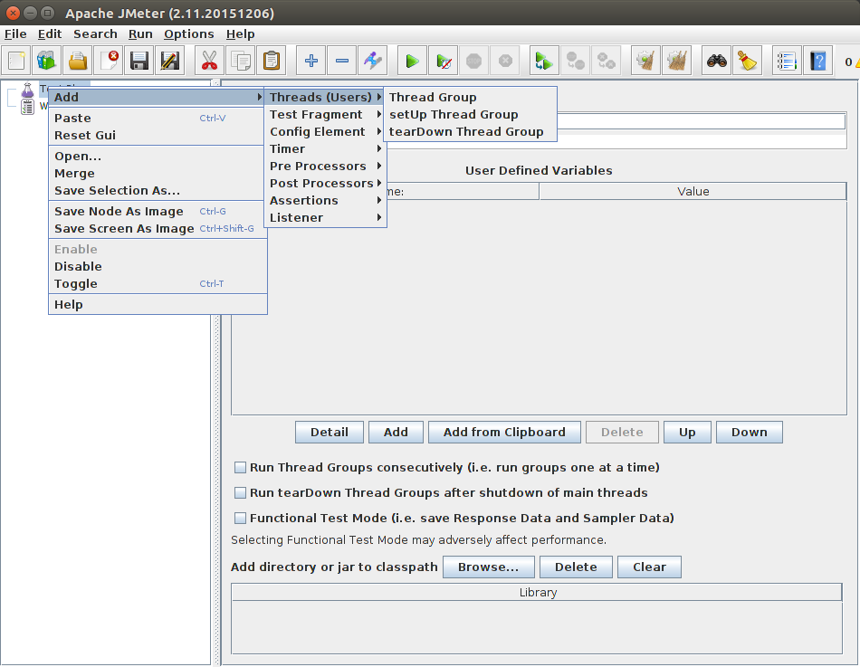
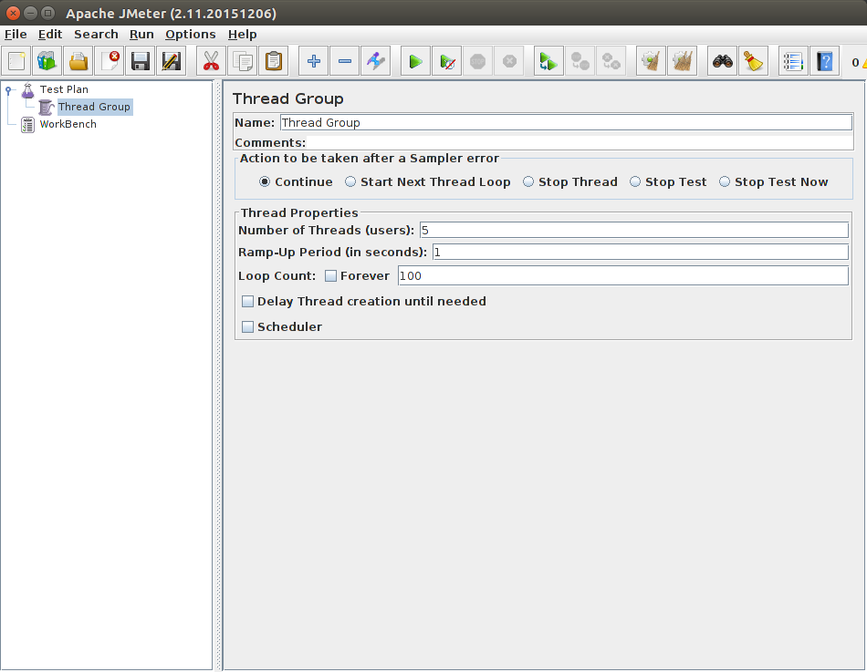
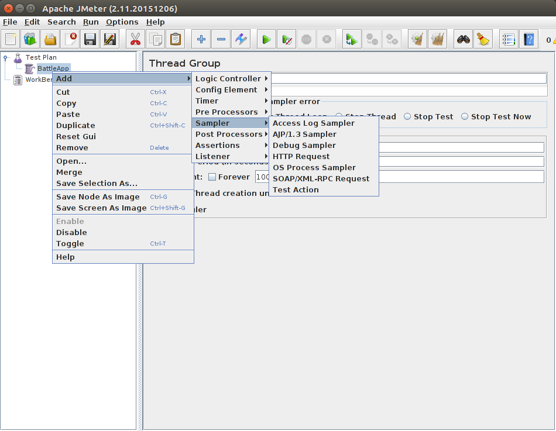
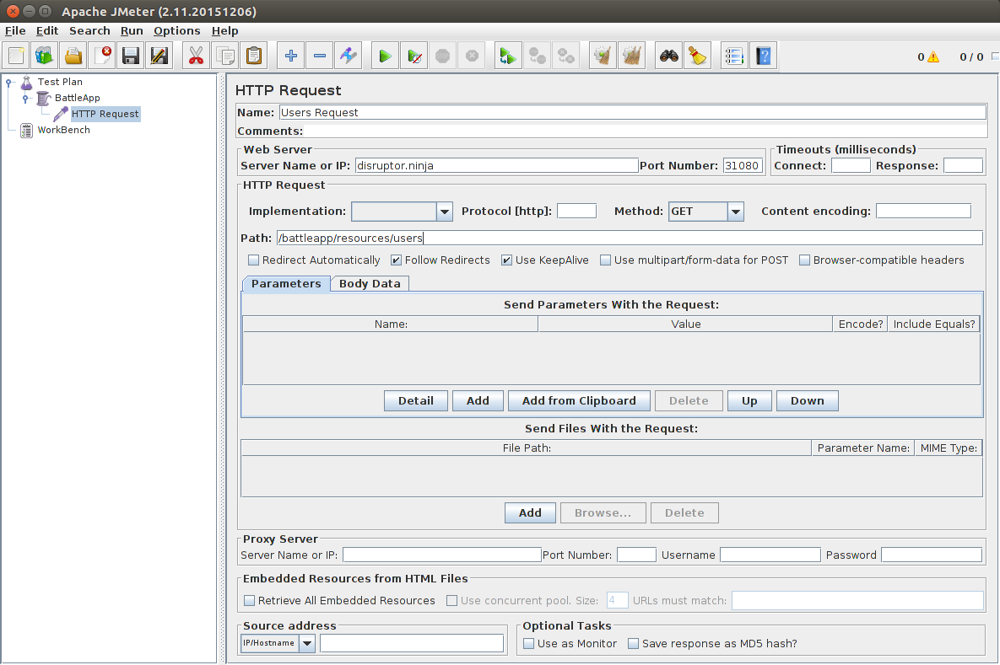
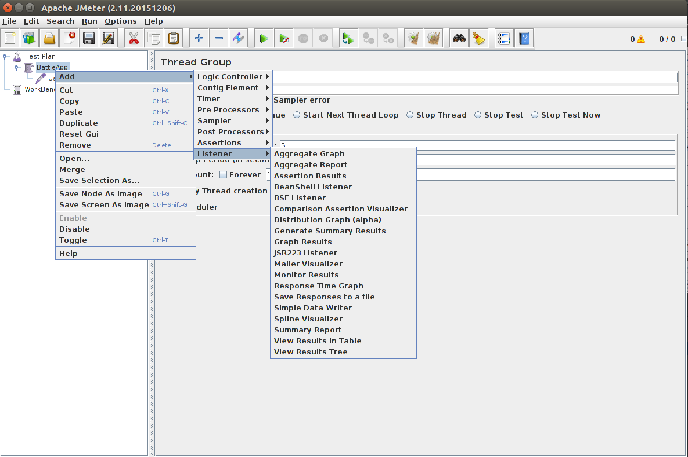
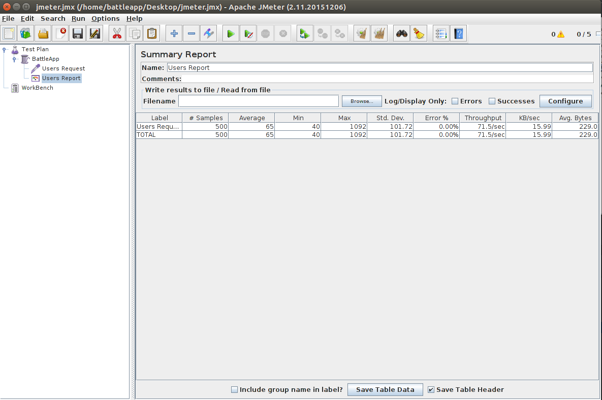

Last test
We're going to use JMeter for our last tests.
Install JMeter
Install JMeter on your local machine.
sudo apt-get install jmeter -y
Create a JMeter test in JMeter
Start JMeter.
jmeter
Right click on Test Plan Add -> Threads (Users) -> Thread Group.

Make the following settings:
Number of Threads (users): 5
Ramp-Up Period (in seconds): 1
Loop Count: 100

Right click on Thread Group Add -> Sampler -> HTTP Request.

Make the following settings:
Server Name or IP: disruptor.ninja
Port Number: 31080
Path: /battleapp/resources/users

Right click on Thread Group Add -> Listener -> Summary Report

Click on .
Save the run in test.jmx.

Create last test project
Create a last test similar to this one.
Move the test.jmx file in this folder /src/test/jmeter/test.jmx.
Parametrize the test.jmx file. The syntax is:
${__property(host)}
Add the following Maven settings:
<build>
<finalName>battleapp.lt</finalName>
<plugins>
<plugin>
<groupId>com.lazerycode.jmeter</groupId>
<artifactId>jmeter-maven-plugin</artifactId>
<version>2.0.3</version>
<configuration>
<propertiesUser>
<host>${performancetest.webservice.host}</host>
<port>${performancetest.webservice.port}</port>
<iterations>${performancetest.webservice.iterations}</iterations>
<threads>${performancetest.webservice.threads}</threads>
<url>${performancetest.webservice.url}</url>
</propertiesUser>
</configuration>
<executions>
<execution>
<id>jmeter-tests</id>
<goals>
<goal>jmeter</goal>
</goals>
</execution>
</executions>
</plugin>
<plugin>
<groupId>com.lazerycode.jmeter</groupId>
<artifactId>jmeter-analysis-maven-plugin</artifactId>
<version>1.0.6</version>
<executions>
<execution>
<goals>
<goal>analyze</goal>
</goals>
<phase>post-integration-test</phase>
</execution>
</executions>
<configuration>
<source>${project.build.directory}/jmeter/results/*</source>
<targetDirectory>${project.build.directory}/reports</targetDirectory>
</configuration>
</plugin>
</plugins>
</build>
<properties>
<maven.compiler.source>1.8</maven.compiler.source>
<maven.compiler.target>1.8</maven.compiler.target>
<failOnMissingWebXml>false</failOnMissingWebXml>
<performancetest.webservice.host>ninja.disruptor</performancetest.webservice.host>
<performancetest.webservice.port>31080</performancetest.webservice.port>
<performancetest.webservice.iterations>31080</performancetest.webservice.iterations>
<performancetest.webservice.threads>31080</performancetest.webservice.threads>
<performancetest.webservice.url>/battleapp/resources/health</performancetest.webservice.url>
</properties>
Start Maven with the parameters set:
mvn clean verify -Dperformancetest.webservice.host=localhost -Dperformancetest.webservice.port=8080 -Dperformancetest.webservice.threads=2 -Dperformancetest.webservice.iterations=50 -Dperformancetest.webservice.url=/battleapp/resources/users
Create the Jenkins pipeline step
Include the test in the Jenkins pipeline:
stage "last test"
node {
git url: "https://github.com/robertBrem/BattleApp-LT"
def mvnHome = tool 'M3'
sh "${mvnHome}/bin/mvn clean verify -Dperformancetest.webservice.host=disruptor.ninja -Dperformancetest.webservice.port=31080 -Dperformancetest.webservice.threads=5 -Dperformancetest.webservice.iterations=500 -Dperformancetest.webservice.url=/battleapp/resources/users"
archiveArtifacts artifacts: 'target/reports/*.*', fingerprint: true
}
Then Build Now.